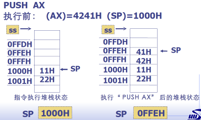
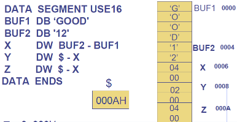

第 1 章 预备知识
什么是汇编
好处：
- 解密程序、逆向工程、病毒木马分析和防止的唯一
- 理解 C 语言程序的最好途径
- 了解操作系统运行细节的最佳方式
- 特定场合下编写程序的必然选择
- 了解计算机工作原理和后继课程学习的基础
目标：
- 掌握语法：指令格式 （关键：寻址方式）
- 掌握语义：指令功能 （关键：分类记忆）
- 灵活应用：阅读、编程 （关键：实践）
伪指令：
- 由汇编程序在汇编过程中执行的指令
指令：
- 告诉 CPU 要执行的操作（一般还要指出操作数地址），在程序运行时执行
Intel 80X86 寄存器组
8 个 32 位寄存器 （通用寄存器）分为两组：数据寄存器组、指示器变址寄存器组
数组寄存器组
| Register | ||
|---|---|---|
| EAX | 累加器 | Accumulator |
| EBX | 基址寄存器 | Base |
| ECX | 计数器 | Count |
| EDX | 数据寄存器 | Data |
EAX 可以看成某个存储单元的地址
(EAX) 则表示 EAX 单元中的内容
寄存器划分：
- 低 16 位组 —— AX, BX, CX, DX
- 低 8 位组 —— AL, BL, CL, DL
- 高 8 位组 —— AH, BH, CH, DH
- (AX) = (AH, AL) , …
| Register | 31-16位 | 15-8位 | 7-0位 |
|---|---|---|---|
| EAX | AH | AL | |
| EBX | BH | BL | |
| ECX | CH | CL | |
| EDX | DH | DL |
将 EAX 的低 16 位置 0：MOV AX, 0
将 EAX 的低 8~15 位置 1：MOV AH, 0FFH
变址寄存器组
| Register | ||
|---|---|---|
| ESI | 源变址寄存器 | Source Index |
| EDI | 基址寄寄存器 | Destination Index |
| ESP | 堆栈指示器 | Stack Pointer |
| EBP | 堆栈基址寄存器 | Base Pointer |
寄存器划分：
- ESI、EDI、ESP、EBP 都是 32 位寄存器
- 低 16 位作 16 位寄存器用，SI、DI、SP、BP
- 一般用作指示器或变址寄存器
可作为数据寄存器用 - ESP, SP 一般不作数据寄存器使用
| Register | 31-16位 | 15-0位 |
|---|---|---|
| ESI | SI | |
| EDI | DI | |
| ESP | BP | |
| EBP | SP |
指令预取部件和指令译码部件
指令预取部件：将要执行的指令从主存中取出，送入指令排队机构中排队
指令译码部件：从指令预取队列中读出指令并译码，再送入译码指令队列排队供执行部件使用
指令的提取、译码、执行重叠进行，形成了指令流水线。
指令指示器：
- EIP/IP：保存下一条要被 CPU 执行的指令的偏移地址 EA。由微处理器硬件自动设置
- EIP/IP 不能由指令直接访问，执行转移指令、子程序调用指令等可使其改变
| Register | 31-16位 | 15-0位 |
|---|---|---|
| IP | IP |
分段部件和分页部件
$ 虚拟存储空间 \xrightarrow{分段部件} 一维线性地址 \xrightarrow{分页部件} 物理存储空间 $
- 虚拟存储地址是一种概念性的逻辑地址，并非实际空间地址
- 程序员编写程序时不用考虑物理存储器大小
- 存储管理单元 MMU 进行虚地址到是地址的自动变换
- 地址变换对应用程序是透明的
分段部件中 6 个 16 位的段寄存器：
| Register | ||
|---|---|---|
| CS | 代码段寄存器 | Code Segment |
| DS | 数据段寄存器 | Data Segment |
| SS | 堆栈段寄存器 | Stack Segment |
| ES | 附加数据段寄存器 | |
| FS | ||
| GS |
80x86 微处理器结构

80x86 的三种工作方式
实方式 （实地址方式）
- 相当于 8086
- CPU 32 位、16 位数据总线、20 位地址总线
保护方式 （虚地址）
- 支持多任务环境的工作方式，建立保护机制存储区采用分段、分页的存储管理机制
- 为每个任务提供一台虚拟处理器
虚拟 8086 方式
- 保护方式下所提供的同时模拟多个 8086 处理器
- 例如 Windows 的 CMD
主存储器
内存：用来存放程序和数据的装置
字节 Byte：最小的寻址单位
字 Word：两个相邻的字节组成一个字
- 低 8 位在低字节（低地址）
- 高 8 位在相邻的高字节
- 上述是小端模式，即低字节在低地址
双字 DoubleWord：四个连续的字节，地址是四个字节中最低的地址
实验-地址类型转换：
- “1234567”，在内存中存为 31H、32H、…、37H，从上到下
1 | int main() |
堆栈
堆栈的建立：
1 | ; 建立一个 16 位段，地址形式是16位段地址, 16位偏移, 使用16位寄存器SP指向栈顶 |
进栈指令：
PUSH OPS，OP 指操作，S 指源- 单字进栈： (SP)-2 → SP; 字数据 → [sp];
记为 (OPS) → ↓ (sp) - 双字进栈：(SP)-4 -> SP; …
- 单字进栈： (SP)-2 → SP; 字数据 → [sp];
功能：将立即数、寄存器、段寄存器、存储器中的一个字/ 双字数据压入堆栈

出栈指令：
POP OPD，OP 指操作，D 指目的- ([SP]) → OPD; (SP+2) → SP
记为 ↑ (SP) → OPD
- ([SP]) → OPD; (SP+2) → SP
功能：将栈顶元素弹出送至某一寄存器、段寄存器 (CS除外)、存储器中
8 个 16 位寄存器内容顺序存入指令：
PUSHA- 功能：将 8 个 16 位寄存器按 AX, CX, DX, BX, SP, BP, SI, DI顺序入堆栈
- 说明：入栈的 SP 是执行 PUSHA 之前的 SP 值
- 依次送出 DI, SI, BP, SP, BX, DX, CX, AS 的
POPA指令
8 个 32 位寄存器内容顺序存入指令：
PUSHAD- 功能：将 8 个 32 位寄存器按 EAX, ECX, EDX, EBX, ESP, EBP, ESI, EDI顺序入堆栈
- 说明：入栈的 SP 是执行 PUSHAD 之前的 SP 值
- 依次送出 EDI, ESI, EBP, ESP, EBX, EDX, ECX, EAS 的
POPAD指令
物理地址的形成
程序中单元 (如变量等) 的相对位置、逻辑地址已定。
两段程序的位置如下：
- 确定了白线条的位置，其他线条的位置可它们之间的相对位置关系计算
段的开始地址要能被 16 整除，16 = 10H = 10000B
段址：段开始单元的物理地址(段首址) / 16
偏移地址：距离段首址的距离
物理地址 = 段址 * 16 + 偏移地址
“段首地址 : 偏移地址”：这样为二维的逻辑地址
一个段最大为 64 KB ( $2^{16}$ )
1 M 内存至少有 16 个段
一个段内可同时访问 4 个段寄存器 CS, DS, ES, SS
在代码段中取指令时：
- 指令的物理地址 PA = (CS) 左移4位 + (IP)，注意不是 EIP
在数据段中读/写数据时：
- 数据的物理地址 PA = (DS或ES) 左移4位 + 16位偏址 （偏址由寻址方式确定）
在堆栈操作时：
- 栈顶的物理地址 PA = (SS) 左移四位 + (SP)
8086 CPU 在运行一个程序时，如何确定 CS, DS, ES, SS 中的值呢？
- 在将一个程序装入内存，准备运行时，由操作系统确定程序中定义的各个段在什么位置。
- 对于代码段，系统自动将代码段首址送到 CS 中 ，并设置 IP 为第一条要执行指令的偏移地址（C 语言的 MAIN ）。
- 对于堆栈段，系统将自动把堆栈段首址送到 SS中，并根据定义的堆栈段的大小，设置 SP 的值。
实方式物理地址的形成
32 位 CPU 与 8086 一样只能寻址 1M 物理存储空间
可以访问 6 个段 CS, DS, SS, ES, FS, GS，每个段至多 64K
物理地址 = (段寄存器) 左移 4 位 + 偏移地址
C 语言变量和指令写在一起，没有分段的概念，而机器语言层次上是要分段的，为什么？
- 变量也需要存储空间存放，而 cpu 执行的执行代码，全部为 01 程序，因此需要堆栈段、数据段、代码段分开，使 cpu 执行代码时可以区分变量和指令。
保护方式下物理地址的形成
80386 中寄存器 32 位，地址线 32 根。
- 在多任务环境下，系统中有多个程序在运行，程序之间要隔离
- 分段是存储管理的一种方式，为保护提供基础
- 不同程序在不同段中，一个程序可包含多个段
- 段用于封闭具有共同属性的存储区域
1 | int main() |
描述符，8Byte —— 保护一个段所需的信息及其存放 ：
段的起始位置（段基地址）
段的大小（段界限）
段的特权级
段的属性（是代码段，数据段，还是堆栈段？数据段是否可写？代码段是否可读出？）
段的位置（在内存还是在磁盘？）
段的类型（在系统段还是用户段？）
段的使用（段被访问过，还是没有？）
分段
描述符表 Local Description Table—— 描述符的集合：
- 一个 LDT，是一个系统段，最大可为 64KB，最多可存放 8192 个描述符
全局描述符表，只有一个 GDT，最大可为 64KB，存放 8192个描述符。
包括：操作系统所使用的段的描述符、各个 LDT 段的描述
全局描述符表，在 GDTR 这个 48 位寄存器，存放其地址。还有一个 LDTR，表示全局描述符中 LDT 的偏址
“xxxx : yyyyyyyy” 从虚拟地址到线性地址的映射：
- xxxx 不是段开始的地址，而是指出栈相应段描述符的方式。称之为 段选择符
- TI = 0
- 从 GDTR 寄存器取 GDT 表的基址
- 在 GDT 表中，以 xxxx 的高 13 位作为偏址，取出描述符 A
- 描述符 A 中的段基址 + yyyyyyyy，即为要访问单元的线性地址
- TI = 1
- 从 GDTR 寄存器取 GDT 表的基址
- 在 GDT 表中，以 LDTR 寄存器的高 13 位作偏址，取出描述符 A
- 描述符 A 描述的段为一个 LDT 段 (如 LDT_A)
- 用 xxxx 的高 13 位作偏址，在 LDT_A 段中找到描述符 P_A
- P_A 描述段的基址 + yyyyyyyy 为线性地址
从线性地址到物理地址：
标识寄存器
保存一条指令执行之后，CPU 所处状态的信息及运算结果的特征
16 位 CPU 中的标志寄存器是 16 位，称 FLAGS
32 位 CPU 中的标志寄存器是 32 位，称 EFLAGS
32 位的 EFLAGS 包含了 16 位 FLAGS 的全部标识
标志位
条件标志位
Overflow Flag 溢出
Sign Flag 符号
Zero Flag 零
Carry Flag 进位符号标志 SF，最高位为 1，则 SF=1
零标志 ZF，运算结果为 0，则 ZF=1
溢出标志 OF，若两个加数最高位相同，且结果最高位相反，则溢出 OF=1
进位标志 CF，若运算从最高位向前产生进位 (或借位)，则 CF=1
标志寄存器操作指令
LAHF (Load AH From Flags)：
- 功能：将标志寄存器的低 8 位送入 AH 中，对标志位无影响。
SAHF (Store AH into Flags)：
- 功能：将 AH 中的内容送入标志寄存器的低 8 位中，而高位保持不变。
标志寄存器堆栈指令：
- 低 16 位：PUSHF、POPF
- 32 位标志寄存器：PUSHFD、POPFD
汇编源程序举例
for 语句
1 | ; AX=0; for(BX=1;BX<100;BX+=2) AX+=BX; |
dowhile语句
1 | ; AX=0; BX=1; do{AX+=BX;BX+=2;}while(BX<100); |
第 2 章 寻址方式
内存中，何处找操作数
CPU 如何知道操作数地址
C 语言中地址的寻找
1
2
3
4
5
6int i, j;
int A[10];
int *p;
int B[20][10];
A[i] = 5;
B[i][j] = 10;
一条指令，关注：
- 操作码 —— 执行什么操作
- 操作数在哪
- CPU 寄存器
- 主存，操作数在主存时，关注段址/段选择符、段内偏移
- IO 设备端口
- 操作数类型
双操作数的指令格式：
操作符 OPD, OPSADD AX, BX，AX 是目的操作数地址，BX 是源操作数地址(OPD) + (OPS) → OPD
寄存器寻址
格式：R
功能：寄存器 R 中的内容即操作数（除个别指令外，R 可为任意寄存器）
操作数在寄存器（操作数地址就是符号地址），操作数类型是字节
例如：
DEC BLADD AX, BXMOV AX, BXADD EAX, EDXMOV AX, BH
寄存器间接寻址
格式：[R]
功能：操作数在内存中，操作数的偏址在寄存器 R 中，即 (R) 为操作数的偏址
R 可以是：
- 8 个 32 位通用寄存器中任一：EAX, EBX, ECX, EDX, ESI, EDI, ESP, EBP
- 4 个 16 位通用寄存器中任一：BX, SI, DI, BP （向下兼容的遗留问题）
操作数所在段是：
- R 为 BP、EBP、ESP，系统默认操作数在堆栈中，等同于 SS:[R]
- 其他情况，默认操作数在 DS 所指示的段中
操作数类型：未知
例：
MOV AX, [SI]
执行前 (AX)=0005H, (SI)=(0020H), DS:(20H)=1234H，执行后 (AX)=1234H, (SI)=0020H。
该指令中目的操作数是寄存器寻址，源操作数是寄存器间接寻址
若指令是MOV AL, [SI]，则 (AL)=34H，目的操作数暗示操作数类型MOV EAX, -1 MOV [ESP], EAX POP EBX，结果 (EBX)=-1MOV AX, [CX]MOV AX, BX和MOV AX, [BX]差别很大，前者是值存在 BX 中，后者存的是偏址，还要根据偏址找到值
C -> 汇编实例
1 | ; 寄存器间接寻址实现 strcpy(buf2, buf1, ...) |
变址寻址
格式：
[R×F + V][R×F] + VV[R×F]
功能：操作数在内存。R 中的内容 × F + V 为操作数的偏址
R 可以是：
- 8 个 32 位通用寄存器中任一：EAX, EBX, ECX, EDX, ESI, EDI, ESP, EBP
- 4 个 16 位通用寄存器中任一：BX, SI, DI, BP （向下兼容的遗留问题）
F (比例因子) 可以是：1、2 (字)、4 (双字)、8
- 当 R 为 16 位寄存器时，F = 1
V 与操作数所在：
- 当 V 为数值常量，是二进制补码表示的有符号数。
若 R 为 BP、EBP、ESP，则系统默认操作数在堆栈中，等同于 SS:[R]；
其他情况默认操作数在 DS 所指示的段中 - 当 V 为变量时，取该变量对应单元的有效地址参与运算。即系统默认操作数在该变量或标号所在的段中（除非显式指明形如 CS:[BX]）。
例：
MOV AL, [EBX*2]+5- 执行前 (AL)=18H, (EBX)=1100H, DS:(2205H)=55H
- 执行后 (AL)=55H, 其他不变
C -> 汇编实例
1 | ; 变址寻址实现 for(i=0;i<5;i++) result+=buf[i]; |
1 | ; 变址寻址实现 strcpy(buf2, buf1, ...) |
基址加变址寻址
格式：
[BR + IR×F + V]V[BR][IR×F]V[IR×F][BR]V[BR + IR×F]
功能：
- 操作数的偏移 = 变址寄存器 IR 中的内容 × 比例因子F + 位移量V + 基址寄存器 BR 的内容
EA = (IR)*F + V + (BR)
使用 16 位寄存器时：
- BR ∈ {BX, BP}
为 BX 默认操作数在 DS 所指示的段
为 BP 默认操作数在 SS 所指示的段 - IR ∈ {SI, DI}
- F = 1
使用 32 位寄存器时：
- BR 可是 8 个通用寄存器中任一
- IR 可是除 ESP 外任一
- 没有比例因子时，写在前面的寄存器是 BR
- 当 BR 为 ESP、EBP，默认段是 SS
操作数的类型：
- 当 V 为变量，则操作数类型为变量的类型
- 当 V 为常量，类型位置
例：
MOV AX, 8[BX][SI]- 执行前 (AX)=45H, (BX)=30H, (SI)=20H, DS:(0058H)=99H
- 执行后 (AX)=99H，其他不变
立即寻址
格式：n
- 操作数直接放在指令中，在指令的操作码后
- 操作数是指令的一部分，位于代码段中
- 指令中的操作数是 8 位、 16 位或 32 位二进制数
- 只能作源操作数
- 立即数不能直接送段寄存器
直接寻址
格式：
段寄存器名 : [n]变量变量+常量
功能：操作码的下一个字/双字单元的内容为操作数的偏址 EA
- 操作数在内存中。操作数的偏址 EA 紧跟在指令操作码后
操作数所在的段：
- 由段寄存器名指示，或是变量所在的段
操作数的类型：
- 若有变量，则是定义变量的类型
- 若无，未知
例：
MOV AX, DS:[2000H]- 执行前 (AX)=1, DS:(2000H)=976
- 执行后 (AX)=976
有关问题
寻址方式 6 种，根据操作数的存放位置可归 3 类：
- 寄存器方式
- 立即方式
- 存储器方式
- 寄存器间接寻址
- 变址寻址
- 基址加变址寻址
- 直接寻址
双操作数寻址方式的规定：
- 一条指令的源操作数和目的操作数不能同时用存储器方式
操作数的类型：
- 寄存器寻址方式中，操作数类型由寄存器定
- 立即数没有类型
- 含变量的寻址方式所表示的操作数类型为变量的类型
- 不含变量的存储器方式所表示的操作数类型未知
MOV [BX], 0两个操作数类型都不明确- 属性定义算符 PTR
MOV BYTE PTR[BX], 0MOV WORD PTR[BX], 0MOV DWORD PTR[BX], 0
双操作数的类型规定：
- 双操作数中至少应有一个的类型是明确的
- 若两个操作数的类型都明确，则两个的类型应相同
第 3 章 宏汇编语言
目标：
- 正确而熟练地使用地址表达式和数值表达式
- 熟悉常用的机器指令的使用格式、功能
- 区别机器指令语句和伪指令语句
- 常用的伪指令功能、使用方法
- 熟练掌握常用的 DOS 系统功能调用 （1, 2, 9, 10 号调用）
宏汇编语言表达式
常量：
便于程序修改、阅读，在
MOV CX, 10中 10 为数值常量MOV CX, AA中 AA 为符号常量。汇编时编译器会将其换为常量
数值表达式：
由常量和运算符组成的有意义的式子
一个常量是一个数值表达式；
由数值表达式通过运算符和括号连接起来是数值表达式
算术运算：
+、-、&、/、MOD、SHR、SHL关系运算：
EQ、NE、LT，GT、LE、GE逻辑运算：
AND、OR、XOR、NOT
变量：
- 一个数据存储单元的名字
- 存储单元的属性：段属性、偏移地址、单元的类型、单元中的内容
- 变量定义、变量定义伪指令、表达式[, …]
DB 字节
DW 字
DD 双字
DF 三字
DQ 四字
DT 十字 - 表达式有五种
- 数值表达式：
X DB 10 - 字符串 （如果串长超过 2 个字符定义伪指令只能用 DB）：
Z DW '12'、Y DB '12'、X DB 'abcd'，前两者在内存中情况相反 - 地址表达式（不能出现带寄存器符号，数据定义伪指令只能用 DW、DD，用 DD 的时候包含段首址）。
有点像指针，面向对象汇编后的代码中大量使用。 - ? （就是一个问号），表示定义的变量无确定的初值
- 重复字句 n DUP (表达式[,…])
X DB 3, DUP(2)等价于X DB 2,2,2X DB 3, DUP(1,2)等价于X DB 1,2,1,2,1,2
- 数值表达式：
标号：
- 机器指令存放地址的符号表示
- 三个属性
- 段属性
- 偏址
- 类型：NEAR, FAR
地址表达式：
- 类型运算符 PTR
BYTE WORD DWORD FWORD NEAR FARMOV BYTE PTR DS:[2000],2BUF DB 1,2、MOV AX WORD PTR BUF，结果是 0201H。
因为 BUF 在内存中从上到下是 01H 02H，取字后就是 0201H
- 跨段前缀
段寄存器名：地址表达式段名：地址表达式 - 属性分离算符
段属性、偏移地址、类型的分离`SEG 变量或标号，如MOV AX, SEG BUFOFFSET 变量或标号，如MOV AX, OFFSET BUFTYPE 变量或标号，如MOV AX, TYPE BUF
常用机器指令语句
指令的共同要求：
- 双操作数的操作数类型必须匹配
- 目的操作数一定不能是立即操作数
- 目的操作数和源操作数不能同时为存储器操作数。
如果一个操作数在数据存储单元中 ，另一个一定要是立即数或寄存器操作数
数据传送指令
一般传送指令：
MOV 指令
MOV OPD, OPS立即数不能送段寄存器；
不能用 MOV 指令改变 CS；
有符号数传送指令
MOVSX OPD, OPS，”S” 指 Signed （386指令）- 功能：将源操作数的符号向前拓展（符号位是 1 拓展全为 1，符号位是 0 拓展全为 0）成与目的操作数相同的数据类型
- OPS 不能为立即数
- OPD 必须为 16/32 位寄存器
- 无符号数传送指令
MOVZX OPD, OPS，”Z” 指 Zero （386指令）- 功能：将源操作数的符号高位补零成与目的操作数相同的数据类型
- OPS 不能为立即数
- OPD 必须为 16/32 位寄存器
一般数据交换指令：
XCHG 指令
XCHG OPD, OPS，将源、目的地址指明的单元中内容互换- 不能使用段寄存器
XCHG DS, AX
查表转换指令
XLAT。([BX+AL]) → AL，或 ([EBX+AL]) → AL功能：将 (BX) 或 (EBX) 为首址，(AL) 为偏移量的字节存储单元中的数据传送给 AL
XLAT 可用来对文本数据进行编码和译码，从而实现简单的加密和解密。用 BX 还是 EBX 取决于 16 位段还是 32 位段
1
2
3
4
5
6
7
8; 设有一个 16 进制数码（ 0 ～ 9 ， A~F) 在(AL) 中，现请将该数码转换为对应的 ASCII
; 简单的方法是分类讨论 (AL) 是否小于等于9
; 现在用查表实现
MYTAB DB '0123456789ABCDEF'
MOV BX, OFFSET MYTAB
XLAT
地址传送指令：
传送偏移地址指令
LEA OPD, OPS，Load effective address- 功能：计算 OPS 的偏址，并将其送入 OPD 中
- OPD 一定是一个 16/32 位的通用寄存器；
- OPS 所提供的一定是一个存储器地址；
- 如果偏址是 32 位，而 OPD 为 16 位，则取低 16 位
如果偏址是 16 位，而 OPD 为 32 位，则高 16 位补 0 MOV SI, OFFSET NUM与LEA SI, NUM等效- 没有与
LEA DI, [SI+4]等效的 MOV 语句 - 没有与
MOV POIN, OFFSET BUF等效的 LEA 语句
传送偏址和数据段首址指令
LDS OPD, OPS，Load data segment- 功能：(OPS) → OPD，(OPS+2或4) → DS
- OPD 一定是一个 16/32 位的通用寄存器；
- OPS 所提供的一定是一个存储器地址，类型为 DWORD/FWORD；
1 | .386 |
算术运算指令
一般对标志位都有影响
加法指令：
加 1 指令
INC OPD
加指令
ADD OPD, OPS带进位加指令
ADC OPD, OPS计算 1234 F00FH +1234 80F0H，只允许使用 16 位寄存器
1
2
3
4
5
6
7
8
9
10
11
12
13
14
15
16
17
18
19
20
21
22data segment use16
dn1 dw 0f00fh, 1234h
dn2 dw 80f0h, 1234h
dsum dw 0, 0
data ends
code segment
assume cs:code, ds:data
start:
mov ax, data
mov ds, ax
mov ax, dn1
add ax, dn2
mov dsum, ax ; 不影响标志位
mov ax, dn1+2 ; 不影响标志位
adc ax, dn2+2 ; 标志位中低位的影响加到当前加法
mov dsum+2, ax
mov ah, 4ch
int 21h
code ends
end start
减法指令：
DEC对 OF、SF、ZF、PF、AF 有影响，其他指令对 CF、OF、SF、ZF、PF、AF 有影响减 1 指令
DEC OPD
求补指令
NEG OPD- 功能：求反加一
减指令
SUB OPD, OPS
带借位减指令
SBB OPD, OPS
比较指令
CMP OPD, OPS- (OPD) - (OPS) 的标志位
乘法指令：
有符号乘法 - 双操作数有符号乘
IMUL OPD, OPS- 功能：(OPD) * (OPS) → OPD，OPD 为 16/32 位寄存器，OPS 为同类型寄存器、存储器操作数或立即数
- 例：
IMUL AX, BXIMUL EAX, DWORD PTR[SI]IMUL AX, 3
有符号乘法 - 三操作数有符号乘
IMUL OPD, OPS, n- 功能：(OPS) * n → OPD
有符号乘法 - 单操作数有符号乘
IMUL OPS- 看 OPS 类型选：
字节乘法：(AL) * (OPS) → AX
双字乘法：(EAX) * (OPS) → EDX, EAX字乘法：(AX) * (OPS) → DX, AX（为什么不是 EAX ？） - OPS 不能是立即数
若乘积的高位 不是 低位的符号拓展，而是包含有效位（溢出），则 CF=1, OF=1
无符号乘法
MUL OPS- 看 OPS 类型选：字节乘法、字乘法、双字乘法
除法指令：
有符号除法
IDIV OPS- 看 OPS 类型选：
字节除法：(AX) / (OPS) → AH(余), AL(商)
双字除法：(EDX, EAX) / (OPS) → EDX(余), EAX(商)字除法：(DX, AX) / (OPS) → DX(余), AX(商)
无符号除法
DIV OPS- 同理，看 OPS 类型
符号拓展指令：
将字节转换成字
CBW- 功能：将 AL 中的符号拓展到 AH 中
将字节转换成字
CWD- 功能：将 AX 中的符号拓展到 DX 中
将 AX 中的有符号数拓展为 32 位送 EAX
CWDE
将 EAX 中的有符号数拓展为 64 位送 EDX, EAX
CDQ
位操作指令
逻辑运算指令：
NOT OPD：(OPD) 求反 → OPDAND OPD, OPS：(OPD)&(OPS) → OPDOR OPD, OPS：(OPD)|(OPS) → OPDXOR OPD, OPS：(OPD)^(OPS) → OPD测试指令：
TEST OPD, OPS- 功能：依据 (OPD)^(OPS) 设置标志位，(OPD)、(OPS) 不变
- CF=0, OF=0, ZF、SF、PF 依结果而定。AND、OR、XOR 亦是如此
移位指令：
- 算术左移 SAL Shift Arithmetic Left
逻辑左移 SHL SHift Logical Left
逻辑右移 SHR SHift Logical Right
算术右移 SAR Shift Arithmetic Right
循环左移 ROL Rotate Left
循环右移 ROR Rotate Right
带进位的循环左移 RCL Rotate Left through Carry- 格式：
操作符 OPD, n 或 CL - 功能：将 (OPD) 中的所有位按操作符规定的方式移动，结果存在 OPD 对应的单元中
- 特别说明：OPD 可是寄存器或地址表达式；在 8086 中 n 只能是 1，其他要用 CL
- 格式：
串操作指令
控制转移指令
第4章 分支程序设计中涉及
处理机控制指令
伪指令语句
处理器选择伪指令：
- 告诉汇编程序选择何种 CPU 所支持的指令系统
| 伪指令 | 功能 | 伪指令 | 功能 |
|---|---|---|---|
| .8086 | 接受8086指令（缺省方式） | .586 | 接受 Pentium 指令（除特权指令） |
| .386 | 接受80386指令（除特权指令） | .586P | 接受全部 Pentium 指令 |
| .386P | 接受所有80386指令 | .686 | 接受 Pentium Pro 指令（除特权指令） |
| .486 | 接受80486指令（除特权指令） | .686P | 接受全部 Pentium Pro 指令 |
| .486P | 接受所有80486指令 | .MMX | 接受 MMX 指令 |
.386MASM 不同版本支持的指令系统不同
数据定义伪指令：
格式：
[变量名] 数据定义伪指令 表达式 [, ...]功能：定义一数据存储区，其类型由所使用的数据定位伪指令指定
表达式 5 种：数值表达式、字符串、地址表达式、?、重复字句
具体查看本章 “宏汇编语言表达式” 部分 -> 变量相关
符号定义伪指令：
- 格式：
符号名 EQU 表达式 - 功能：为常量、表达式及其他符号定义一个等价的符号名
- 说明：符号名不可省。数据定义中变量名可省。变量占用存储单元，但符号名不占用存储单元。
段定义伪指令：
段定义伪指令：
- 格式：
段名 SEGMENT [使用类型] [定位方式] [组合方式] ['类别'] ...... 段名 ENDS - “使用类型”：
USE16，16 位段，段的最大长度为 64KB，地址的形式是 16 位段地址和 16 位偏移地址，寻址方式为 16 位寻址方式；USE32，.386 默认使用 32 位段。 - 使用了伪指令
.386（或以上），”使用类型” 才起作用
- 格式：
假定伪指令：
- 格式：
ASSUME 段寄存器名:段名 [, ...] - 功能：用来设定段寄存器与段之间的对应关系
- 目标程序运行时才能给段寄存器置值
- CS 和 SS 的内容将由操作系统自动设置
- DS 和 ES 的内容须由程序指令设置，且一定要做，这才能保证正确地产生数据存储单元的物理地址
- 在程序启动时，DS 中的值是
程序段前缀 Program Segment Prefix （PSP）
- 格式：
置汇编地址计数器伪指令
汇编地址计数器：＄
汇编程序在翻译程序时，每遇到一个新段，就将汇编地址计数器置 0 。
在分配存储单元后（变量定义、机器指令），汇编地址计数器累加其分配的单元长度。
＄用来记录正在被汇编程序翻译的语句的地址。
标号和变量的偏移地址就是准备翻译该语句时当前汇编地址计数器＄的值。
汇编地址计数器符号＄可出现在表达式中。

ORG 数值表达式功能：将 $ 设置成数值表达式的值。数值表达式的值应为非负的整数，其值可在 0 ～ 65535 之间（16 位段）或 0 ～4G 之间（ 32 位段）
源程序结束伪指令：
END [表达式]- 功能：遇到该语句是，汇编工作停止
- 如果有表达式，指出第一条被执行指令的地址。
- 如果无表达式，则说明该程序不能单独运行，这时，它作为一个子模块供其他程序调用。
- 不可将 END 语句错误地安排在程序中间。
常用 DOS 系统功能调用
调用操作系统提供的功能：设备管理、文件管理、目录管理等
一般过程：
- 调用号放入 AH 中
- 置好入口参数
INT 21H- 调用结束，分析出口参数
键盘输入 1 个字符 —— 1 号：
MOV AH, 1INT 21H- 功能：
等待从键盘输入一个字符;
将输入字符的ASCII 码 → AL;
将该字符送显示器显示。
显示输出 1 个字符 —— 2 号：
MOV AH, 2MOV DL, 带显示字符的 ASCIIINT 21H- 功能：将 DL 中的字符送显示器显示
显示输出字符串 —— 9 号：
LEA DX, 字符串首偏移地址MOV AH, 9INT 21H- 功能：从 DS：DX 所指向的单元开始，依次显示字符，直到遇到 ‘$‘ 为止。
- 若字符串本身包含 ‘$‘ 就用 2 号调用循环输出吧
键盘输入字符串 —— 10 号：
LEA DX, 缓冲区首偏移地址MOV AH, 10INT 21H- 功能：从 DS：DX 所指的输入缓冲区输入字符串并送显示器显示
1 | STACK SEGMENT STACK |
第 4 章 程序设计方法
分支程序设计
1 | ;if(x==y) statements1 |
转移指令：
- 条件转移
- 简单条件转移 10 条
- 无符号数条件转移 4 条
- 有符号数条件转移 4 条
- 无条件转移 JMP
- 段内直接、段间直接
- 段内间接、段间间接
条件转移
简单条件转移：
| 指令 | 条件 |
|---|---|
| JZ / JE | ZF=1 |
| JNZ / JNE | ZF=0 |
| JS | SF=1 |
| JNS | SF=0 |
| JO | OF=1 |
| JNO | OF=0 |
| JC | CF=1 |
| JNC | CF=0 |
| JP / JPE | PF=1 |
| JNP / JPO | PF=0 |
无符号数条件转移指令：
| 指令 | 条件 |
|---|---|
| JA / JNBE | CF=0 且 ZF=0 |
| JAE / JNB | CF=0 或 ZF=1 |
| JB / JNAE | CF=1 且 ZF=0 |
| JBE / JNA | CF=1 或 ZF=1 |
1 | CMP AX, BX |
有符号数条件转移指令：
| 指令 | 条件 |
|---|---|
| JG / JNLE | SF=OF 且 ZF=0 |
| JGE / JNL | SF=OF 或 ZF=1 |
| JL / JNGE | SF != OF 且 ZF=0 |
| JLE / JNG | SF != OF 或 ZF=1 |
例子：根据输入的数字，显示对应的串。如 0 -> ‘zero’, 1 -> ‘first’, …，对于不同的输入，输出的串长度不同。
程序的关键：如何根据输入，将对应的待显示的串首址送 DX
打表的写法：
1 | STR0 DB 'zero', '$' |
无条件转移
| 格式 | 名称 | 功能 |
|---|---|---|
| JMP 标号 | 段内直接 | (IP/EIP)+位移量 → IP/EIP |
| JMP OPD | 段内间接 | (OPD) → IP/EIP |
| JMP 标号 | 段间直接 | 标号的EA → IP/EIP 段首址 → CS |
| JMP OPD | 段间间接 | (OPD) → IP/EIP (OPD+2或4) → CS |
例子：根据不同输入，跳到不同程序段。1->LP1, 2->LP2, …
朴素的写法：
1 | ... 判1 |
打表的写法：把指令地址列表构造好，直接 JMP TAB[BX]。（swtich-case 和 面向对象时大量采用）
条件控制流伪指令，知道有就行了，本课不推荐使用。我们深入底层。
1 | .386 |
循环程序设计
例：设以 BUF 为首址的一片单元中，存放了 N 个有符号字节数据，找出其中的最大数，存放到 AL中。
1 | BUF DB 1,-10,20,-25, 25,50, … |
80x86 提供四种计数控制循环转移指令：
LOOP 标号- 功能：(CX / ECX) - 1 → CX / ECX
若 (CX / ECX) 不为 0，则转标号处执行。 - 基本等价于
DEC CX/ECX JNZ 标号，因为 LOOP 指令对标志位无影响
- 功能：(CX / ECX) - 1 → CX / ECX
LOOPE / LOOPZ 标号功能：(CX / ECX) - 1 → CX / ECX
若 (CX / ECX) 不为 0，且 ZF=1，则转标号处执行。等于 0 转移指令，本指令对标志位无影响
例子：判断以 BUF 为首址的 10 个字节中是否有非 0 字节。有，则置 ZF 为 0, 否则 ZF 置为 1 。
1
2
3
4
5MOV CX, 10
MOV BX, OFFSET BUF -1
L3:
INC BX
CMP BYTE PTR [BX], 0 LOOPE L3
LOOPNE / LOOPNZ 标号- 功能：(CX / ECX) - 1 → CX / ECX
若 (CX / ECX) != 0，且 ZF=0，则转标号处执行。 - 例子：判断以 BUF 为首址的 10 个字节中是否有空格字节。
- 功能：(CX / ECX) - 1 → CX / ECX
JCXZ / JECXZ 标号- 若 (CX/ECX) 为 0，则转移
子程序设计
子程序格式：
1 | 子程序名 PROC [类型] |
子程序的调用和返回（CALL 和 RET）
| 名称 | JMP 格式 | CALL 格式 |
|---|---|---|
| 段内直接 | JMP 标号 | CALL 标号 |
| 段间直接 | JMP 标号 (FAR) | CALL 标号 (FAR) |
直接调用
- 段内直接调用
- 格式：
CALL 子程序名 - 功能：
(IP/EIP) -> (SP/ESP)
目的地址 EA -> IP/EIP
- 格式：
- 段间直接调用
- 格式：
CALL FAR PTR 子程序名 - 功能：
a.(CS)→↓(SP/ESP)
b.(IP/EIP)→↓(SP/ESP)
c.目的地址的段首址→ CS
d.目的地址的EA→IP/EIP
- 格式：
- 段内直接调用
间接调用
- 段内间接调用
- 格式：
CALL WORD PTR OPD(16位段)CALL DWORD PTR OPD(32位段) - 功能：(IP/EIP)→↓(SP/ESP）
(OPD)→IP/EIP
- 格式：
- 段间间接调用
- 格式：
CALL DWORD PTR OPD(16位段)CALL FWORD PTR OPD(32 位段) - 功能：
a.(CS)→↓(SP/ESP)
b.(IP/EIP)→↓(SP/ESP)
c.(OPD)→IP/EIP
d.(OPD+2/4)→CS - 注：OPD寻址方式与JMP类似
①段内间接调用可用除立即方式以外的其它寻址方式；
②段间间接调用可用除立即方式和寄存器寻址方式以外的其它寻址方式；
间接调用时，子程序的入口地址可由寻址方式得到。 - 应用：多个子程序入口地址组成地址表时，可用寻址方式确定转入子程序的入口地址。
- 格式：
- 段内间接调用
返回指令 RET
- 格式：
RET / RET n - 功能：
a. 段内返回: ↑(SP)→IP/EIP
b. 段间返回: ↑(SP)→IP/EIP, ↑(SP)→CS
- 格式：
子程序调用现场的保护方法
调用现场的保护与恢复：
- 保护现场：主要指调用子程序时，主程序中使用的寄存器的值不因子程序的调用而被破坏。
- 可在主程序做，也能在子程序做
主程序与子程序的参数传递：
参数传递 : 主程序为子程序提供入口参数，子程序返回结果给主程序
寄存器法: 将所需参数放在寄存器中带入子程序。适合于参数少的情况。
- 优点：传递信息快，编程简单方便，节省存贮单元，但参数不能太多，要避免出错。
- 注意的问题：出口参数是子程序交给主程序的处理结果，没有必要将其列在需要保护的现场寄存器之中。而入口参数是否要保护，可依实际情况事先约定。
堆栈法：堆栈法指将传递的参数放在堆栈中，进入子程序或返回主程序后，再将参数从堆栈中一一取出送入指定的寄存器。
- 当参数个数较多时，一般用堆栈法传递参数，在使用堆栈时要特别注意栈顶的变化，要收回堆栈中传递参数的单元。
约定单元法：将数据与运行好的结果放入事先规定好的存贮单元中。
例子：子程序RADIX，将EAX中的32位无符号二进制数转换为(EBX)所指定进制的ASCII码送入(SI)所指定的偏移地址为首地址的存储区中
1 | ; 寄存器法 |